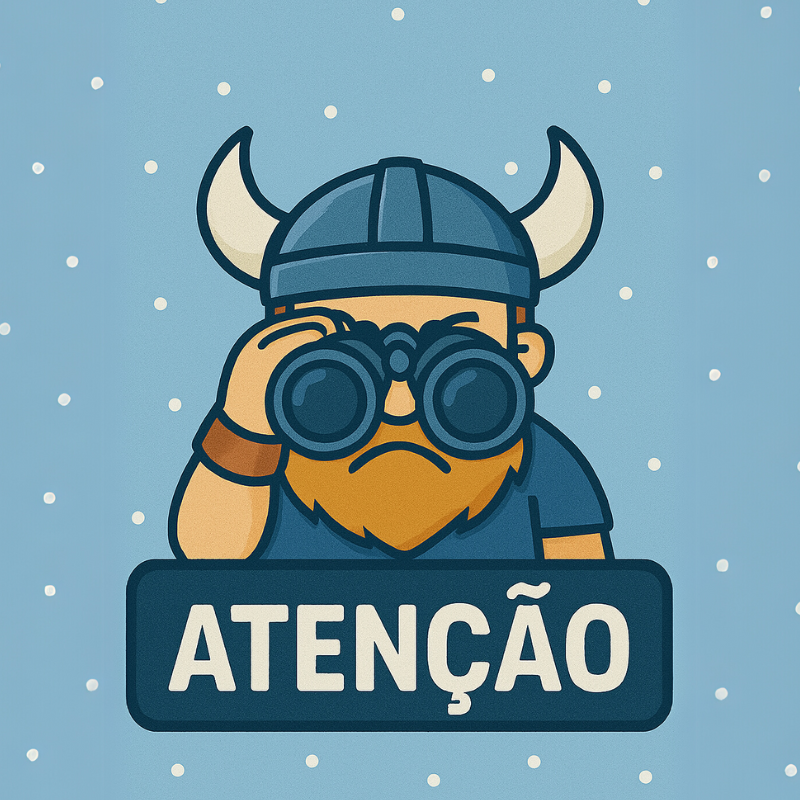
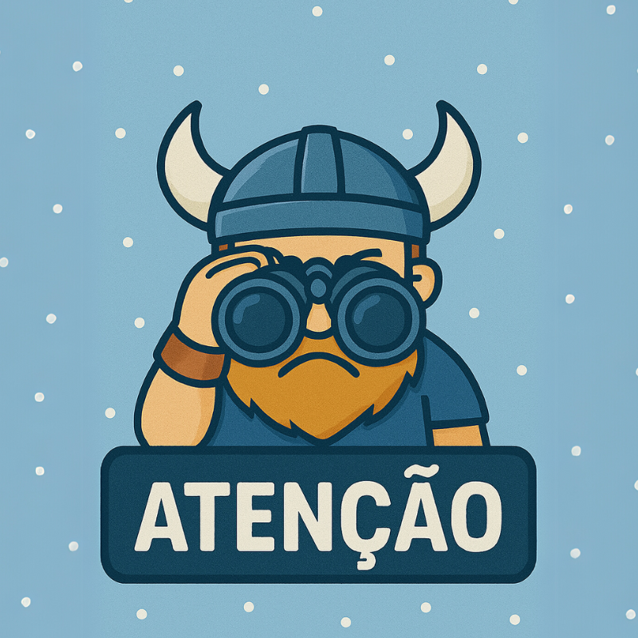

Walka
O "Mundo Walka" representa toda a simbologia e o estilo característico de Walka que inspiraram este jogo!
Em polonês, a palavra "Walka" significa "luta", que é justamente o objetivo principal do jogo.
Além do significado do nome, o projeto Mundo Walka apresenta um estilo medieval nórdico, complementado pela paleta de cores "Inverno Nórdico" e por um logotipo inspirado nas características e nas cores da bandeira da Polônia.
Walka é um jogo de ação e estratégia onde o objetivo principal é derrotar um inimigo que se movimenta constantemente de um lado para o outro.
Os jogadores terão a oportunidade de enfrentar esse adversário, utilizando suas habilidades e armas para derrotá-lo.
 

A cada vitória, o jogo oferece uma sensação de conquista, desafiando os jogadores a aprimorar suas táticas e se tornar cada vez mais habilidosos.
Se você curte um estilo medieval, gráficos em pixel art e batalhas eletrizantes, conheça Walka! Mergulhe nessa aventura e divirta-se sem parar com a gente!